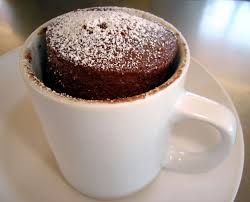
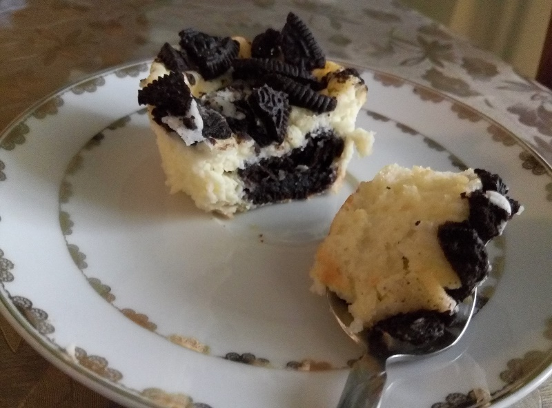
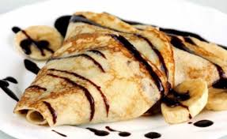

RECEPT 1
SASTOJCI
- 2 kasike secera
- 2 kasike brasna
- 4 kasike mleka
- 2 kasike kakaa
- 1 jaje
Pravljenje
- u solju sipajte brasno i secer i mesajte
- dodajte kakao i mesajte
- dodajte mleko i mesajte
- dodajte jaje i mesajte
- mesajte dok se sve ne sjedini
- solju sa smesom stavite u mikrotalasnu na 3-5 min
- na kraju mozete dodati dzem,slag,slatku pavlaku ili nesto drugo po izboru

RECEPT 2
SASTOJCI
- 200 g krem sira
- 200 g kisele pavlake
- 150 g secera u prahu
- 2 manja pakovanja oreo keksa
- 2 jaja
Pravljenje
- Poredjajte papirne korpice u kalupe za mafine. Na dno svake korpice stavite po jedan oreo keks.
- Mikserom umutite prvo krem sir, pavlaku i secer. Dodajte dva jaja i umutite.
- Preko svakog keksica sipajte smesu da bude korpica 2/3 puna.
- Po vrhu izmrvite jos oreo keksica.
- Pecite na 160 stepeni oko 30 minuta.

RECEPT 3
SASTOJCI
- 200 g brašna
- 2 jajeta
- 2 kašike ulja
- 200 ml mleka
- 200 ml kisele vode
- prstohvat soli
Pravljenje
- U odgovarajuću posudu staviti jaja i mikserom blago umutiti
- Dodati polovinu brašna i mleka i umutiti
- Staviti drugu polovinu brašna, prstohvat soli i ostatak mleka. Mikserom umutiti da nema grumuljica od brašna
- U odgovarajuću posudu staviti jaja i mikserom blago umutiti
- Ostaviti da smesa odstoji 30 minuta
- Kutlackom stvljati testo na tiganj
- Nakon pola do 1 minuta okrenuti palacinku, ponoviti postupak i za drugu stranu
- Kao prilog za palacinke predlazzemo dzem(domaci) eurokrem, secer,pavlaku i sunku
